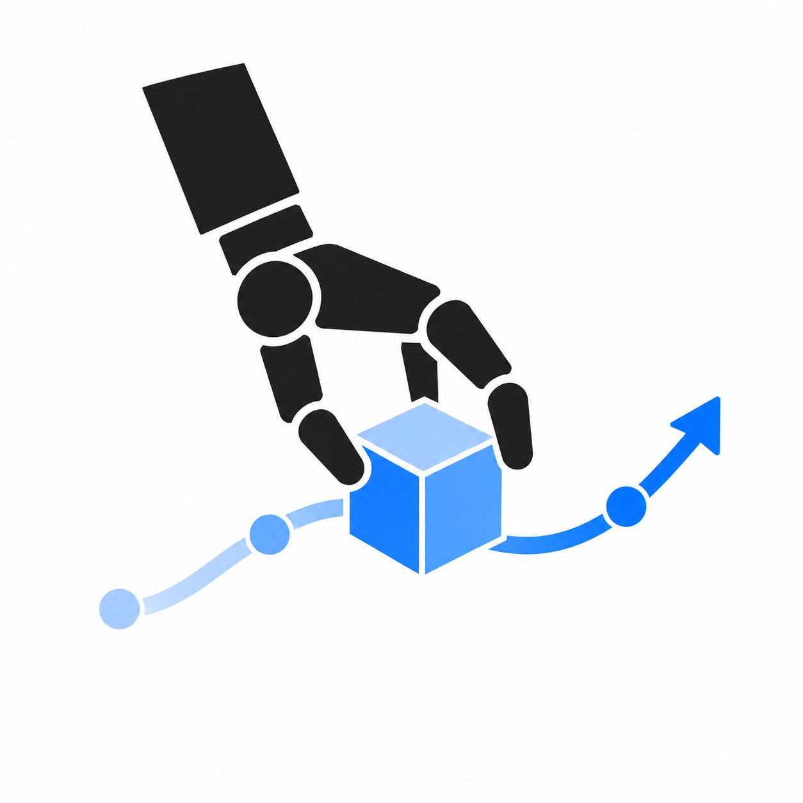

1.5×
Object reorientation
Invert cup
DexLink
Synthesizing Dexterous Demonstrations
from Chained Hand–Object Poses
1.5×
Object reorientation
Synthesizing Dexterous Demonstrations
from Chained Hand–Object Poses
How do we specify
the behavior we want?
Chen et al. ’25 · Ma et al. ’25
Jiang et al. ’25 · Li et al. ’25
Chen et al. ’21 · Mandikal & Grauman ’22

sparse · composable